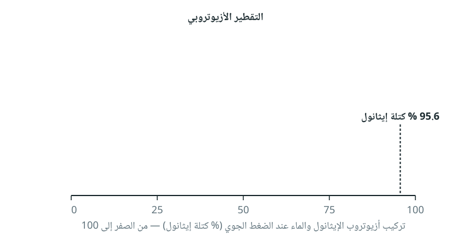

التقطير الأزيوتروبي
Azeotropic distillation
تقطير يُضاف فيه مكوّن ثالث (مُدخِل) يشكّل أزيوتروبًا جديدًا مع أحد المكوّنين فيحمله إلى القمة، فيُكسر الأزيوتروب الأصلي ويُفصل المزيج.
التقطير الأزيوتروبي طريقة لفصل مزيج يشكّل أزيوتروبًا، أي مزيجًا يغلي عند تركيب ثابت يخرج بخاره بالتركيب نفسه فلا يفيد التقطير الاعتيادي في تجاوزه. تُضاف إلى المزيج مادّة ثالثة تُسمّى المُدخِل، تُختار بحيث تشكّل أزيوتروبًا جديدًا مع أحد المكوّنين، وغالبًا أزيوتروبًا ثلاثيًّا أدنى غليانًا يحمل الماء إلى القمة ويترك المنتج الجافّ في القاع. في الأنظمة غير المتجانسة يتكثّف البخار العلوي إلى طورين سائلين، فيُعاد الطور العضوي الغنيّ بالمُدخِل إلى العمود كارتجاع ويُسحب الطور المائي في قنينة فصل. المبدأ الهندسي أن المُدخِل يُنشئ حدود تقطير جديدة تسمح بانتقال التركيب من منطقة إلى أخرى، وهو ما لا يحدث في المزيج المتجانس وحده. ويُعدّ هذا التقطير من أصعب المنظومات محاكاةً وتشغيلًا لأنها تجمع انفصال الأطوار وحدود التقطير وحالات الاستقرار المتعددة.
كيف تعمل الظاهرة؟
يُضاف المُدخِل إلى المزيج الأزيوتروبي فيشكّل أزيوتروبًا جديدًا مع أحد المكوّنين، غالبًا ثلاثيًّا أدنى غليانًا يحمل الماء إلى القمة ويترك المنتج الجافّ في القاع. يتكثّف البخار العلوي إلى طورين سائلين، فيُعاد الطور العضوي الغنيّ بالمُدخِل ارتجاعًا ويُسحب الطور المائي في قنينة فصل. بهذا تُنشأ حدود تقطير جديدة تسمح بانتقال التركيب بين منطقتين، وهو ما لا يحدث في المزيج المتجانس وحده.
العلاقة بالأرقام
أزيوتروب الإيثانول والماء عند الضغط الجوي يحتوي 95.6% كتلة إيثانول ويغلي عند 78.2 °C، أدنى من غليان الإيثانول النقي 78.37 °C، ولذلك لا يرفع التقطير الاعتيادي النقاء فوق هذه النسبة. وفي الأنظمة غير المتجانسة يتكثّف البخار العلوي إلى طورين سائلين، وتُحسب نسبتهما بقاعدة الرافعة على خطّي ربط عند ظروف المكثّف لا ظروف الصينية العليا.
مفاهيم متقاربة
يختلف عن التقطير الاستخلاصي في أن المُدخِل يشكّل أزيوتروبًا جديدًا ويظهر في الناتج العلوي، بينما المُستخلِص لا يشكّل أزيوتروبًا ويبقى في القاع. ويختلف عن تقطير تبديل الضغط في أنه يضيف مكوّنًا ثالثًا بدل تغيير الضغط، وعن التقطير الاعتيادي في أن الأزيوتروب نقطة تُستثمر لكسر أزيوتروب آخر لا عيبًا يُتجنّب.
حدود التطبيق
لا يصلح إلا حين يوجد مُدخِل يشكّل أزيوتروبًا جديدًا بخصائص مناسبة، ويستهلك طاقة في استعادة المُدخِل وتدويره. والمنظومة حساسة جدًّا: تغيّر صغير في نسبة الارتجاع أو في الضغط قد ينقل التركيب العلوي خارج منطقة الطورين فيتوقف العمود، وفقدان الواجهة في قنينة الفصل يوقف السلسلة كلها. كما أنها تعاني حالات استقرار متعددة، فالتشغيل والتحكم أصعب من التقطير الاعتيادي.

| الكمية | القيمة | المصدر |
|---|---|---|
| تركيب أزيوتروب الإيثانول والماء عند الضغط الجوي | 95.6 % كتلة إيثانول | [3] |
| درجة غليان أزيوتروب الإيثانول والماء | 78.2 °C | [3] |
| عدد الأطوار السائلة التي يتكثّف إليها البخار العلوي في التقطير الأزيوتروبي غير المتجانس | 2 طور سائل | [2] |
المصادر
- 1 Journal review. Azeotropic distillation — Wiley (AIChE Journal) (1996). doi.org/10.1002/aic.690420110 · اطُّلع عليه 2026-11-28
- 2 Heterogeneous Azeotropic Distillation — Chemstations (Knowledge Center) (2019). chemstations.com/hubfs/Datacor-Chemstations/PDF/Knowledge_Center/DISTILLATION.pdf · اطُّلع عليه 2026-11-28
- 3 Distilling ethanol: what is the ethanol–water azeotrope? — DutchChems (مقالة تعليمية) (2025). www.dutchchems.com/why-ethanol-cannot-be-distilled-above-96/ · اطُّلع عليه 2026-11-28
استشهد بهذا المصطلح
الصيغتان مبنيتان من بيانات الصفحة نفسها: العنوان والتاريخ ورابط النسخة المنشورة.
التقطير الأزيوتروبي — Azeotropic distillation. (2026). ديوان المعرفة — انفراد. https://infiradev.com/diwan/terms/term-azeotropic-distillation.html
@misc{term-azeotropic-distillation2026,
title = {التقطير الأزيوتروبي},
titleaddon = {Azeotropic distillation},
howpublished = {{ديوان المعرفة — انفراد} — مرجع علمي عربي},
year = {2026},
url = {https://infiradev.com/diwan/terms/term-azeotropic-distillation.html},
urldate = {2026-11-28},
note = {مراجعة علمية: Abdullah Al-Huwaidi}
}
راجعه: Abdullah Al-Huwaidi · 2026-11-28 · آخر تحديث 2026-11-28